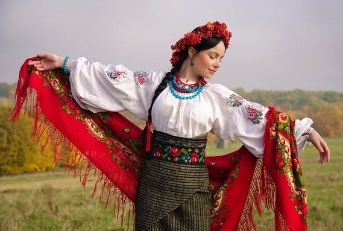

Block 1
♬
Традиційний одяг українок
Block 2
♡
Форма і деталі українського жіночого одягу дуже різноманітні. На таке різноманіття вплинули і регіональні особливості, і багаті традиції українського повсякденного та святкового життя. Своєрідність жіночого костюма виявляється і в крої предметів одягу, і в загальному силуеті вбрання, і в складі частин костюма. Відзначається також різноманітність кольорових поєднань, декоративних обробок та прикрас.
Різниця костюмів по регіонах пояснюється близьким спілкуванням з сусідніми народами, тому в північно-західних областях жіночий український костюм має схожі риси з польським національним одягом, для Поділля характерні деякі елементи та орнаменти, що нагадують молдавські мотиви. Можна сказати, що Поліссі та Середнє Придніпров'я зберегли більше свій історичний етнічний стиль. Їх одяг і прийнято вважати традиційно українським.
Block 3
♪

Block 4
♥
Основою українського жіночого одягу є сорочка з лляної або іншої натуральної тканини, оздоблена вишивкою, тому її називають вишиванкою чи кошуля. Раніше це була довга сорочка, яка на більшій частині території України шилася цілісною. На Закарпатті сорочку шили з двох частин: нижня частина була з більш щільної і практичною тканини, а верхня частина з тонкої і нарядною.
Жіночі вишиванки західних районів шилися з коміром, зазвичай відкладним. У східній частині України шиють більш давній варіант вишитих сорочок - без коміра.
Вишивка - основна прикраса вишиванки. Нею прикрашають, за традицією, комір, рукава і нижній край (поділ) сорочки. Найбільше вишивки на рукавах: у верхній їх частині або в нижній. Іноді розшивається і весь рукав. Поверх вишитої сорочки часто надягали не менш гарні жилети (корсетки) або теплі жупани.
По тому, як носила молода жінка вишиванку, можна було бачити, заміжня вона чи ні. Незаміжні дівчата носили вишиванки з барвисто вишитим подолом поверх спідниці, підперезуючись сорочку красивим поясом. Після сватання низ вишиванки забирався в поневу - спідницю особливого крою з шматків вовняної тканини. Існував навіть спеціальний обряд при сватання, коли на дівчину надягали поневу поверх вишиванки.
Block 5
♦
Види традиційних спідниць:
Можна виділити три основні види спідниць, які характерні для українського етнічного костюма: дерга, запаска, плахта.
В якості повсякденного одягу використовувалася запаска. Її рідко прикрашали вишивкою або якимось іншим декором. Запаску шили з недорогої вовняної тканини різних відтінків синього, червоного, зеленого кольорів. Запаска являла собою шматок тканини, до верхніх кутів якого пришивали тасьми або тонкі пояски, щоб закріплювати запаску на талії. Одночасно надягали дві запаски різного кольору: одна ззаду, інша спереду. У такій спідниці було зручно рухатися і управлятися по господарству.
Для повсякденного носіння використовувалася і дерга. Складалася дерга з трьох шматків чорної щільної тканини. Довжина спідниці-дерги 60 - 70 сантиметрів, а ширина до трьох метрів. Три шматка тканини щільно облягали фігуру жінки, а зверху, на талії, зв'язувалися широким м'яким поясом.
У святкові дні українки надягали плахту, як частина ошатного костюма. Для плахти використовували вовняну картату тканину довжиною до чотирьох метрів. Жінки з найзаможніших родин могли дозволити собі купити для плахти клац або навіть парчу. Прикрашали такі святкові спідниці вишивкою і тасьмою з вовняних і шовкових ниток.
Весь одяг українок шився й оздоблювався вручну. За красою одягу можна було судити не тільки про багатство родини, але й про майстерність і працьовитість господині чи молодої дівчини - майбутньої нареченої. Тому над своїм одягом і одягом своєї сім'ї жінки працювали майже весь час, вільний від господарських турбот.